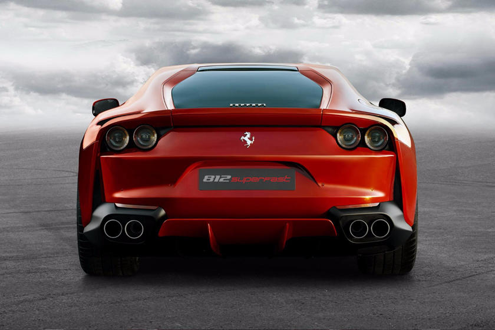

Ferrari

Ferrari é uma fabricante italiana de carros esportivos de luxo com sede em Maranello. Fundada por Enzo Ferrari em 1939 na divisão de corridas da Alfa Romeo com o nome Auto Avio Costruzioni, a empresa construiu seu primeiro carro em 1940. No entanto, o início da empresa como fabricante de automóveis é geralmente reconhecido em 1947, quando o primeiro carro com o nome Ferrari foi concluído. Em 2014, a Ferrari foi classificada como a marca mais poderosa do mundo pela consultoria Brand Finance.[2] Em junho de 2018, o 250 GTO de 1964 tornou-se o carro mais caro da história, estabelecendo um recorde de venda de 70 milhões de dólares.
O Grupo Fiat adquiriu 50% da Ferrari em 1969 e expandiu sua participação para 90% em 1988.[5] Em outubro de 2014, a Fiat Chrysler Automobiles (FCA) anunciou suas intenções de separar a Ferrari S.p.A. da FCA; no momento do anúncio, a FCA detinha 90% da Ferrari.[6][7][8] A separação começou em outubro de 2015 com uma reestruturação que estabeleceu a Ferrari NV (uma empresa constituída nos Países Baixos) como a nova holding do Grupo Ferrari e a subseqüente venda pela FCA de 10% das ações em uma oferta pública inicial e listagem simultânea de ações ordinárias na Bolsa de Nova York.
Através das etapas restantes da separação, o interesse da FCA nos negócios da Ferrari foi distribuído aos acionistas da FCA, com 10% continuando a ser propriedade de Piero Ferrari.[10] O spin-off foi concluído em 3 de janeiro de 2016.
Ao longo da sua história, a empresa tem se destacado por sua participação contínua em corridas, especialmente na Fórmula 1, onde é a equipe de corrida mais antiga e mais bem sucedida, detendo o maior número de vitórias (15).[11] Os carros de estrada da Ferrari são geralmente vistos como um símbolo de velocidade, luxo e riqueza.